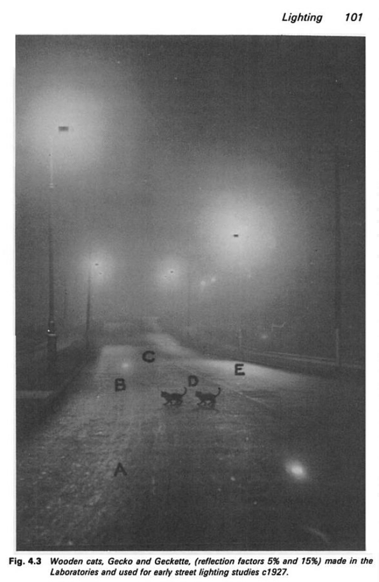

Sunday, August the 24th, 2014
back to: title, date or indexes

One of the few photographs ever taken of the Blister Lane Bypass. From The GEC Research Laboratories 1919–1984 by Sir Robert Clayton and Joan Algar (Peter Peregrinus, 1989). Many thanks to Linda Clare for bringing it to my attention.